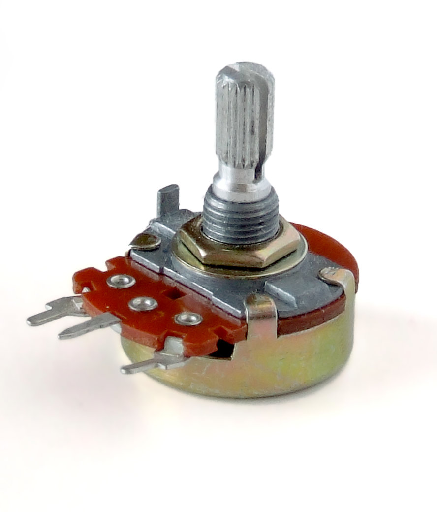
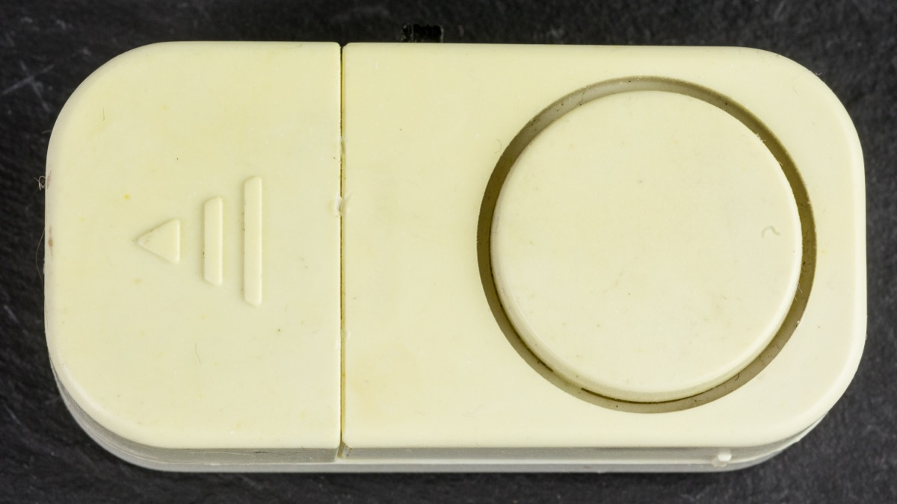
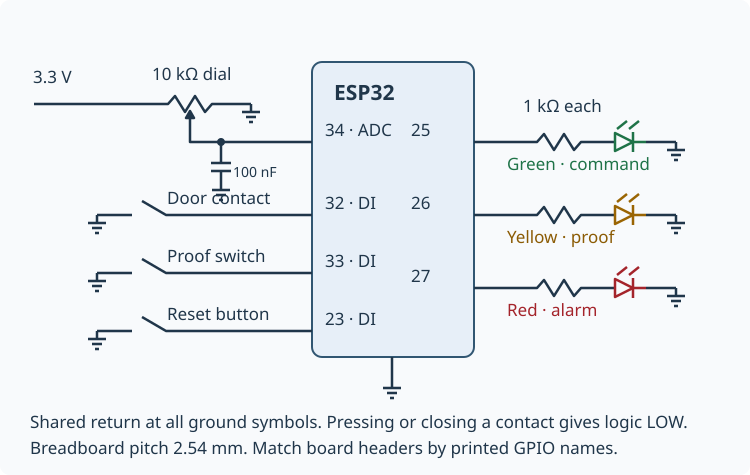

Build a mini building-management panel
Make a tabletop version of a ventilation controller. A dial represents the temperature, a reed contact senses a real door, and two separate lamps show the fan command and the fan proof signal.
Read the panel before you wire it
In a building management system (BMS), a controller reads field points, makes a decision and reports the result. A fan command says the controller asked the fan to start. A proof point comes back from a separate device that checks it. The green lamp on this trainer stands for the command. A switch injects proof and lights the yellow lamp. Red means door open or a latched proof fault. The dial and fan lamps let you commission the sequence with inexpensive parts.







Watch. Follow the board and USB port selection, upload and Serial Monitor. Use the downloadable control program below. DroneBot Workshop · Introduction to ESP32 – Getting Started.
Collect one set of parts
| Quantity and part | Specification | Australia | India |
|---|---|---|---|
| 1 · ESP32 classic WROOM-32/32E View photo | Fitted pin headers, matching USB data cable and laptop running Arduino IDE. Reuse the board from P183. | MLAB · 32E DevKitC | QuartzComponents · 30-pin ESP32 |
| 1 · 10 kΩ linear potentiometer View photo | B10K, through-hole or with leads. Simulates a change in supply or room temperature. Add a 100 nF ceramic capacitor from the wiper to GND. | element14 Australia · Linear potentiometers | element14 India · Linear potentiometers |
| 3 · Indicators and resistors View photo | One each red, yellow and green, high-efficiency two-lead LEDs and three 1 kΩ ¼ W resistors. Elmepi · CC BY 2.0. | Jaycar · Standard LEDs | QuartzComponents · LEDs and resistors |
| 3 · Passive contacts View photo | One magnet contact from the door indicator or a jumper, one latching SPST proof switch and one normally open momentary reset button. Verify each contact with a meter before connection. Use a removable jumper in place of either switch for the first test. | Jaycar · Door contact | Robu · Wired contacts |
| 1 · Breadboard and jumpers View photo | 2.54 mm pitch, nine female-to-male jumpers and eight male-to-male jumpers. Evan-Amos · public domain, resized. | Core Electronics · Female-to-male | QuartzComponents · Combo kit |


Tools are the P03 multimeter, USB cable, marker and scrap cardboard for the panel face. Use leads under 20 cm for the switch inputs on the bench. Make the door contact a dry switch by disconnecting it from the 5 V door indicator. Use a second contact if both products need to run at once.
1 · Wire the miniature plant


- Unplug USB. Set the ESP32 next to the breadboard. Wire GND and 3V3 to the uninterrupted blue and red rails. Label the red rail 3.3 V. Fit the dial on spare strips on the f–j side or wire it with jumpers if the pin spacing differs. Use the numbers printed on the board headers.
- Build each lamp and input from the table. Each end of a 1 kΩ resistor is four breadboard pitches (10.16 mm) apart. The LED holes are two pitches (5.08 mm) apart. Keep the anode on the resistor side. Clip the contact pairs to GND rather than bringing in a separate voltage.
- Cut a stand-up cardboard face roughly 150 × 90 mm. Mark green FAN COMMAND, yellow PROOF, red ALARM, the dial TEMP SIM, and the switches DOOR, PROOF and RESET. For a first test, leave the actual LEDs on the breadboard and stick the labels beside them. Prop a small cardboard door up at the edge. Use the magnet to close its switch when it shuts.
| Point and type | ESP32 pin | Wiring on the breadboard |
|---|---|---|
| Temperature dial · analog input | GPIO34 | Outer ends to 3V3 and GND. Wiper to g6, then g6 to GPIO34. 100 nF from h6 to GND. |
| Door shut · digital input | GPIO32 | Pin to a30. One reed lead to b30 and other to GND. Closed contact means the door is shut. |
| Fan proof · digital input | GPIO33 | Pin to a33. Proof switch from b33 to GND. Closed means the fan is proven. |
| Reset · digital input | GPIO23 | Pin to a36. Momentary button from b36 to GND. A press acts once. |
| Fan command · digital output | GPIO25 | Pin to a5. 1 kΩ b5–b9, LED c9 (A)–c11 (K), jumper a11 to GND. |
| Proof lamp · digital output | GPIO26 | Pin to a14. 1 kΩ b14–b18, LED c18 (A)–c20 (K), jumper a20 to GND. |
| Alarm lamp · digital output | GPIO27 | Pin to a23. 1 kΩ b23–b27, LED c27 (A)–c29 (K), jumper a29 to GND. |
Keep 5 V and external signals away from ESP32 inputs. With power off, confirm no short between the two rails and check all contact returns. The three contacts use the same pull-up idea as P184, this time inside the ESP32. An open contact reads high. The firmware translates the closed contact into a meaningful field state.
2 · Load the controller and read live points
Save mini-bms.ino and ventilation.h together in a folder called mini-bms. Open the .ino file. Follow P183’s Arduino IDE and board setup through USB upload, using this sketch in place of the Wi-Fi sketch. Select ESP32 Dev Module, esp32 board core 3.3.8 and the USB serial port. Open Serial Monitor at 115200 baud.
Start with the dial low, the door shut and proof open. Look for the CSV columns below. If you miss the header, reset the board. Spin the dial and verify the temperature column changes from roughly 18 °C to 30 °C. This reading comes from a dial scaled to a temperature range. Ground the wiper input temporarily if the value appears locked high.
ms,simulated_temp_C,door_shut,proof,fan_command,mode,fault
2500,21.0,1,0,0,idle,none
6000,25.2,1,0,1,awaiting_proof,none
7500,25.2,1,1,1,running,noneThe control loop turns on at 25 °C and stays on until 23 °C. That gap is the software version of the comparator’s hysteresis. It waits up to eight seconds for proof. A proof that disappears while running or that stays on after stopping causes a lockout. Reset only clears it when the temperature is at or below 23 °C, the door is shut and proof is off.
3 · Prove the sequence and find one fault
| What to do | Pass result |
|---|---|
| Door shut, proof off. Turn slowly through 25 °C. | Green on, yellow off, mode awaiting_proof. |
| Close PROOF within 8 s. | Yellow on, mode running. Green stays on. |
| Turn down to 24 °C, then to 23 °C. | At 24 °C green stays on. At or below 23 °C green turns off. Open PROOF within 3 s to return to idle. |
| Request cooling again with PROOF open and wait 8–9 s. | Green turns off, red turns on and fault is missing_proof. |
| Try reset while the dial is still high, then lower it and press again. | First press leaves the fault latched. Second press at or below 23 °C clears it with the door shut and proof open. |
| While running, open PROOF without moving the dial. | Green off and red on. The fault reads lost_proof. |
| Reset and request cooling again. With PROOF on, open the door. | Green off and red on for door open. Open PROOF within 3 s to simulate the fan coming to rest. If proof remains on the fault reads unexpected_proof. |
For a wiring fault, unplug USB and lift the jumper at b33. Reconnect and request cooling. Before changing code, verify that the yellow lamp stays off and the connection between the switch and GPIO33 is missing with power off. Restore the jumper, clear the fault and repeat the passing sequence. If a real fan has been requested but proof is absent, the site investigation starts with the physical fan and proof device. P79 · Fan command and airflow proof.
Save several lines around each change and mark the field action next to it. Use those records in the full air-handler commission, then map a point from a real cable to a screen in P63. The board photo identifies the hardware. The CSV above illustrates expected behaviour. The fan and temperature are simulated and the complete tabletop circuit still needs the bench checks above.
Next · Trace a building point from field wiring to the display